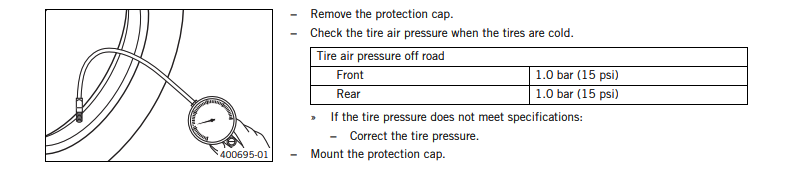
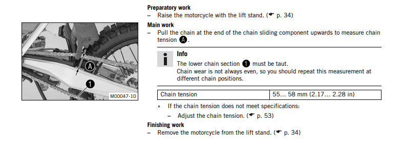

Congratulations on your decision to purchase a KTM motorcycle. You are now the owner of a state-of-the-art sports motorcycle that will give you enormous pleasure if you service and maintain it accordingly.
We wish you a lot of enjoyment in riding this vehicle.
| Enter the serial numbers of your vehicle below |
| Chassis number |
.............................................. |
| Engine number |
.............................................. |
Check and charge the battery
Check if there is enough power to start the engine.
If the battery is depleted from starting the vehicle repeatedly, the battery must be charged immediately.
The battery is maintenance-free, which means that the acid level does not need to be checked.
Low tire air pressure leads to abnormal wear and overheating of the tire.
Correct tire air pressure ensures optimal riding comfort and maximum tire service life.

If the chain is too taut, the components of the secondary power transmission (chain, engine sprocket, rear sprocket, bearings in the transmission and in the rear wheel) will be under additional load.
In addition to premature wear, this can cause the chain or the countershaft of the transmission to break in extreme cases
If the chain is too loose, however, it may fall off the engine sprocket or rear sprocket and block the rear wheel or damage the engine.
Ensure that the chain tension is correct and adjust it if necessary.
